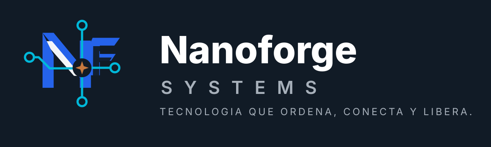

De requerimientos a producción en 8 horas reales de trabajo orquestado con agentes IA
Un portal académico completo, probado, auditado y desplegado en 4 días calendario. No como promesa de laboratorio: como sistema real en producción.
La pregunta correcta no es “¿la IA escribió el código?”. Es “¿qué sistema de ingeniería permite que ese código llegue a producción con pruebas, auditoría y control?”.
Contrato antes que código
Requerimientos, ADRs, reglas críticas y criterios de aceptación numerados.
Constructor con condición de término
Un agente trabaja por fases hasta cumplir tests, linter, commits y restricciones duras.
Auditoría independiente
Otro rol revisa contra reglas de negocio, no contra los tests que el constructor ya pasó.
Un sistema escolar multiciclo, operable en hosting compartido y pensado para usuarios reales
Dominio funcional
Registro de aspirantes por CURP, PDF oficial de inscripción, documentación, evaluación diagnóstica, curso propedéutico, resultados, grupos, matrícula, horarios, avisos y dashboards.
Contexto de uso
Alumnos de alrededor de 15 años, celulares básicos, baja experiencia digital y personal administrativo no técnico. La UX no era decoración: era requisito operativo.
Contrato funcional
40 requerimientos funcionales, 30 no funcionales y 20 criterios de aceptación formales convertidos en pruebas automatizadas.
Stack deliberadamente conservador
Laravel · PHP 8.3 · MariaDB · Blade · Livewire 3 · Tailwind · GitHub Actions · deploy por SSH.
Arquitectura sobria: menos superficie para improvisación, más espacio para verificar
Monolito modular
Para ~300 alumnos por ciclo, microservicios no agregaban valor. La única excepción es OMR como servicio externo con fallback CSV.
Alumno sin cuenta
Acceso por CURP y segundo dato en secciones sensibles. Cero fricción de contraseñas para el usuario menos digital.
Identidad separada del ciclo
Alumno y ProcesoIngreso no son lo mismo. El aislamiento histórico 2026/2027 se diseñó desde el modelo de datos.
Catálogos administrables
Entidades, municipios, localidades y reglas variables viven en datos administrables, no en valores hardcodeados.
Hosting real
Colas con driver database vía cron, PDF sin binarios, assets compilados localmente. Diseño compatible con Hostinger compartido.
PDF versionado
Las plantillas por ciclo permiten cambiar el formato oficial futuro sin romper documentos históricos.
Tres roles separados a propósito, unidos por artefactos versionados
Orquestador
Decide producto, valida fases, resuelve lo institucional y mantiene el criterio de negocio. No necesita teclear código en el camino crítico.
Arquitecto / revisor
Produce diseño técnico, prompts de fase y auditoría contra reglas críticas. Es defensa independiente.
Constructor
Ejecuta cada fase: migraciones, modelos, Livewire, vistas, tests y commits hasta cumplir una condición de término verificable.
Anatomía de un prompt de construcción que sí se puede auditar
45 commits en una historia lineal: el proceso queda expuesto, no maquillado
estimado desde sesiones del proyecto
3 → 6 julio 2026
El trabajo crítico se movió de teclear a decidir, verificar y coordinar.
Los hallazgos de auditoría son el mejor argumento, no una debilidad
| Hallazgo | Severidad | Detección | Corrección |
|---|---|---|---|
| Registro no verificaba bloqueo de edición en re-envíos del alumno, aunque los tests de fase estaban en verde. | Alta | Revisión estática independiente contra RF-15 y reglas críticas. | Fase 1.16 + test de regresión |
| Permiso de creación de ciclos más laxo que el diseño aprobado. | Media | Revisión post-Fase 3 contra docs/03. | UX.0 + test 403 |
| Verificación post-deploy: HTTPS, salud de producción, sin stack traces y sin secretos en repo. | OK | Fetch remoto y revisión de repo. | Sin acción pendiente |
Métricas extraídas del repositorio y de las sesiones locales de trabajo
En 154 archivos, sin contar dependencias.
20/20 criterios de aceptación cubiertos.
Estimación desde sesiones Codex del proyecto.
Incluye entrada cacheada recontada por sesión.
Dato honesto sobre el tiempo
La ventana de commits fue más amplia y algunas sesiones locales quedaron abiertas o se solaparon. Para presentar el caso con precisión, la cifra principal es 8 horas reales de trabajo del orquestador distribuidas en 4 días calendario. En tokens, los logs locales de Codex suman ~87.4M tokens procesados incluyendo caché; la aproximación incremental sin entrada cacheada es ~3.67M.
Un piloto de una sola fase, con el equipo como revisor independiente
- Composición limpia, precisa y confiable.
- Acentos cobre moderados como énfasis humano.
- Azul/cian para tecnología, integración y flujo.
- Saturación visual, estética cyberpunk o gamer.
- Sombras pesadas y fondos que reduzcan legibilidad.
- Promesas absolutas sin evidencia verificable.